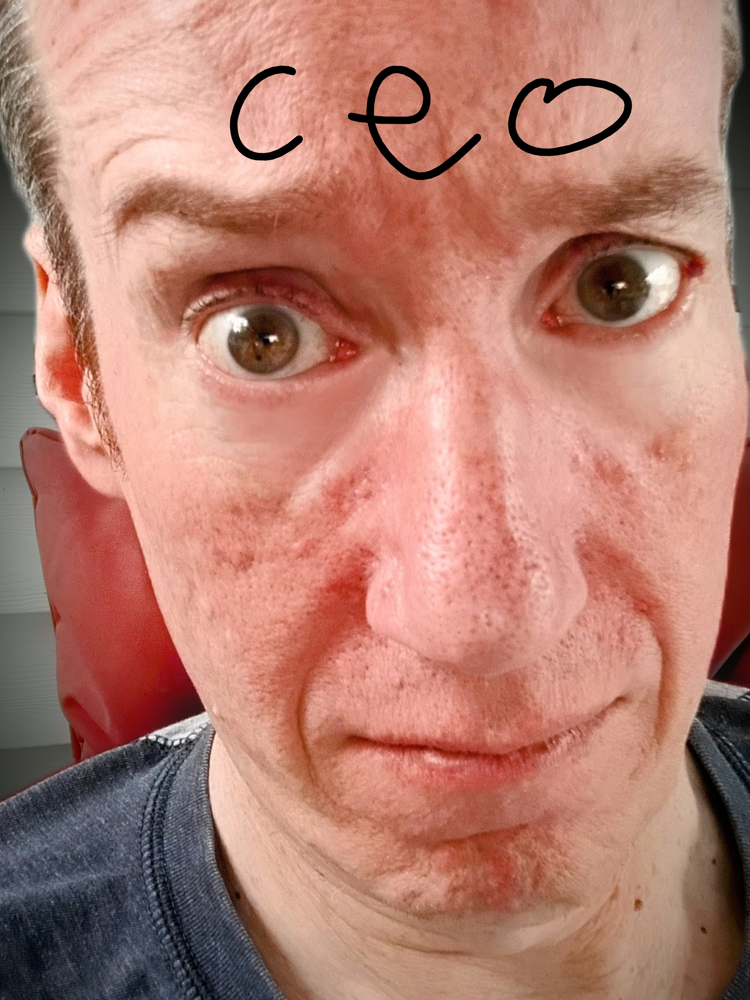
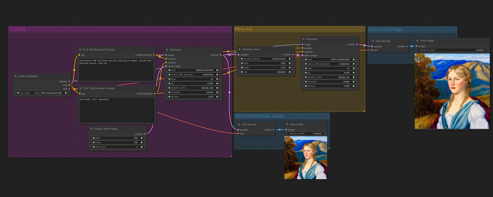
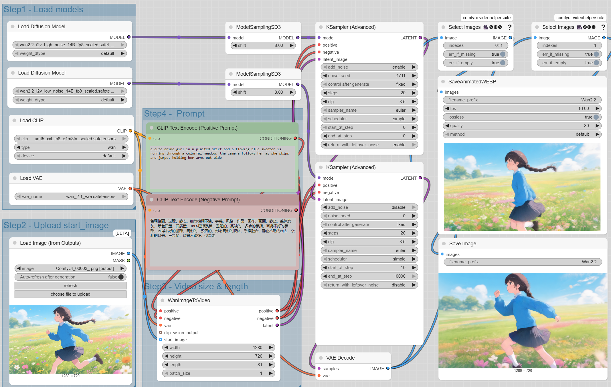
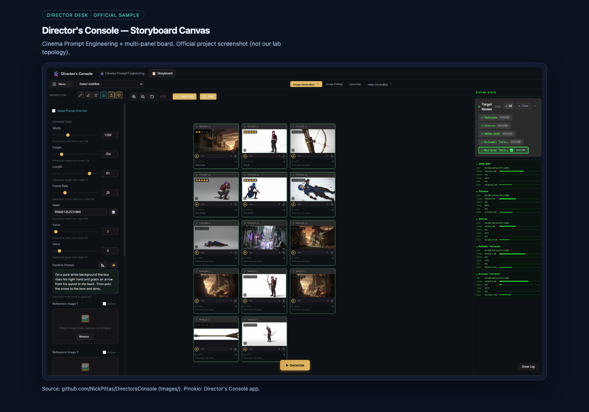

mok-tua does not reskin ComfyUI or Director’s Console. It orchestrates them.
Image vs video are different complex graphs (not the same templates gallery twice).
Storyboard + image-to-video examples share one Drive source still. Layout uses
object-fit: contain so node graphs are fully visible — no crop.
TUI — mok-tua C64 or modern skin: doctor, providers, run, smoke, lock.
GUI peers — each tool keeps its internal interface.
Same spirit as the Commodore-themed maintenance deck on ai-gateway.



